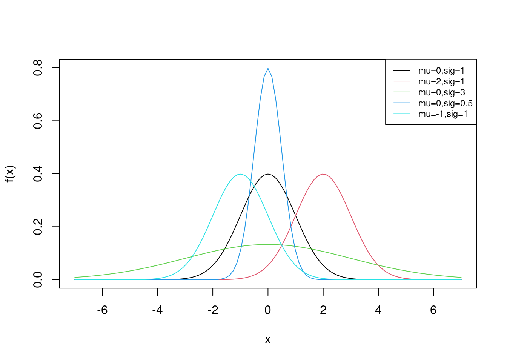

13 Named Continuous Distributions
13.1 Objectives
Differentiate between common continuous distributions (Uniform, Exponential, Normal) by identifying their parameters, assumptions, and moments. Evaluate scenarios to determine the most appropriate distribution to model various types of data.
Apply
Rto calculate probabilities and quantiles, and simulate random variables for common continuous distributions.State and apply the empirical rule (68-95-99.7 rule).
Explain the relationship between the Poisson process and the Poisson and Exponential distributions, and describe how these distributions model different aspects of the same process.
Apply the memory-less property in context of the Exponential distribution and use it to simplify probability calculations.
13.2 Continuous distributions
In this chapter we will explore continuous distributions. This means we work with probability density functions and use them to find probabilities. Thus we must integrate, either numerically, graphically, or mathematically. The cumulative distribution function will also play an important role in this chapter.
There are many more distributions than the ones in this chapter but these are the most common and will set you up to learn and use any others in the future.
13.2.1 Uniform distribution
The first continuous distribution we will discuss is the uniform distribution. By default, when we refer to the uniform distribution, we are referring to the continuous version. When referring to the discrete version, we use the full term “discrete uniform distribution.”
A continuous random variable has the uniform distribution if probability density is constant, uniform. The parameters of this distribution are \(a\) and \(b\), representing the minimum and maximum of the sample space. This distribution is commonly denoted as \(U(a,b)\).
Let \(X\) be a continuous random variable with the uniform distribution. This is denoted as \(X\sim \textsf{Unif}(a,b)\). The pdf of \(X\) is given by: \[ f_X(x)=\left\{\begin{array}{ll} \frac{1}{b-a}, & a\leq x \leq b \\ 0, & \mbox{otherwise} \end{array}\right. \]
The mean of \(X\) is \(\mbox{E}(X)=\frac{a+b}{2}\) and the variance is \(\mbox{Var}(X)=\frac{(b-a)^2}{12}\). The derivation of the mean is left to the exercises.
The most common uniform distribution is \(U(0,1)\) which we have already used several times in this book. Again, notice in Figure 13.1 that the plot of the pdf is a constant or uniform value.
To check that it is a proper pdf, all values must be non-negative and the total probability must be 1. In R the function for probability density will start with the letter d, followed by some short descriptor for the distribution (e.g., “unif” or “norm”). For the uniform distribution, we use dunif(). We integrate the pdf from 0 to 1 and find that the area under the curve, the total probability, is one.
integrate(function(x) dunif(x), lower = 0, upper = 1)1 with absolute error < 1.1e-1413.2.2 Exponential distribution
Recall from the chapter on named discrete distributions, we discussed the Poisson process. If arrivals follow a Poisson process, we know that the number of arrivals in a specified amount of time follows a Poisson distribution, and the time until the next arrival follows the exponential distribution. In the Poisson distribution, the number of arrivals is random and the interval is fixed. In the exponential distribution we change this, the interval is random and the arrivals are fixed at 1. This is a subtle point but worth the time to make sure you understand.
Let \(X\) be the number of arrivals in a time interval \(T\), where arrivals occur according to a Poisson process with an average of \(\lambda\) arrivals per unit time interval. From the previous chapter, we know that \(X\sim \textsf{Poisson}(\lambda T)\). Now let \(Y\) be the time until the next arrival. Then \(Y\) follows the exponential distribution with parameter \(\lambda\) which has units of inverse base time:
\[ Y \sim \textsf{Expon}(\lambda) \]
Note on \(\lambda\): One point of confusion involving the parameters of the Poisson and exponential distributions. The parameter of the Poisson distribution (usually denoted as \(\lambda\)) represents the average number of arrivals in whatever amount of time specified by the random variable. In the case of the exponential distribution, the parameter (also denoted as \(\lambda\)) represents the average number of arrivals per unit time. For example, suppose arrivals follow a Poisson process with an average of 10 arrivals per day. \(X\), the number of arrivals in 5 days, follows a Poisson distribution with parameter \(\lambda=50\), since that is the average number of arrivals in the amount of time specified by \(X\). Meanwhile, \(Y\), the time in days until the next arrival, follows an exponential distribution with parameter \(\lambda=10\) (the average number of arrivals per day).
The pdf of \(Y\) is given by:
\[ f_Y(y)=\lambda e^{-\lambda y}, \hspace{0.3cm} y>0 \]
The mean and variance of \(Y\) are: \(\mbox{E}(Y)=\frac{1}{\lambda}\) and \(\mbox{Var}(Y)=\frac{1}{\lambda^2}\). You should be able to derive these results but they require integration by parts and can be lengthy algebraic exercises.
Example:
Suppose at a local retail store, customers arrive to a checkout counter according to a Poisson process with an average of one arrival every three minutes. Let \(Y\) be the time (in minutes) until the next customer arrives to the counter. What is the distribution (and parameter) of \(Y\)? What are \(\mbox{E}(Y)\) and \(\mbox{Var}(Y)\)? Find \(\mbox{P}(Y>5)\), \(\mbox{P}(Y\leq 3)\), and \(\mbox{P}(1 \leq Y < 5)\)? Also, find the median and 95th percentile of \(Y\). Finally, plot the pdf of \(Y\).
Since one arrival shows up every three minutes, the average number of arrivals per unit time is 1/3 arrival per minute. Thus, \(Y\sim \textsf{Expon}(\lambda=1/3)\). This means that \(\mbox{E}(Y)=3\) and \(\mbox{Var}(Y)=9\).
To find \(\mbox{P}(Y>5)\), we could integrate the pdf of \(Y\):
\[ \mbox{P}(Y>5)=\int_5^\infty \frac{1}{3}e^{-\frac{1}{3}y}\mbox{d} y = \lim_{a \to +\infty}\int_5^a \frac{1}{3}e^{-\frac{1}{3}y}\mbox{d} y = \]
\[ \lim_{a \to +\infty} -e^{-\frac{1}{3}y}\bigg|_5^a=\lim_{a \to +\infty} -e^{-\frac{a}{3}}-(-e^{-\frac{5}{3}})= 0 + 0.189 = 0.189 \]
Alternatively, we could use R. We first use the pexp() function, which finds \(P(Y\leq y)\). Since we want \(P(Y > 5)\), we take the complement by subtracting from one.
##Prob(Y > 5) = 1 - Prob(Y <= 5)
1 - pexp(5, rate = 1/3)[1] 0.1888756Or using integrate(), we integrate the pdf from 5 to infinity because, for the exponential distribution, \(y > 0\).
integrate(function(x) 1/3*exp(-1/3*x), 5, Inf)0.1888756 with absolute error < 8.5e-05For the remaining probabilities, we will use the functions in R:
##Prob(Y <= 3)
pexp(3, rate = 1/3)[1] 0.6321206##Prob(1 <= Y < 5)
pexp(5, rate = 1/3)-pexp(1, rate = 1/3)[1] 0.5276557The median is \(y\) such that \(\mbox{P}(Y\leq y)=0.5\). We can find this by solving the following for \(y\): \[ \int_0^y \frac{1}{3}e^{-\frac{1}{3}y}\mbox{d} y = 0.5 \]
Alternatively, we can use qexp in R:
## median
qexp(0.5, rate = 1/3)[1] 2.079442## 95th percentile
qexp(0.95, rate = 1/3)[1] 8.987197Both from Figure 13.2 and the mean and median, we know that the exponential distribution is skewed to the right.
13.2.2.1 Memory-less property
The Poisson process is known for its memory-less property. Essentially, this means that the time until the next arrival is independent of the time since last arrival. Thus, the probability of an arrival within the next 5 minutes is the same regardless of whether an arrival just occurred or an arrival has not occurred for a long time.
To show this let’s consider random variable \(Y\) ( time until the next arrival in minutes) where \(Y\sim\textsf{Expon}(\lambda)\). We will show that, given it has been at least \(t\) minutes since the last arrival, the probability we wait at least \(y\) additional minutes is equal to the marginal probability that we wait \(y\) additional minutes.
First, note that the cdf of \(Y\), \(F_Y(y)=\mbox{P}(Y\leq y)=1-e^{-\lambda y}\), you should be able to derive this. So, \[ \mbox{P}(Y\geq y+t|Y\geq t) = \frac{\mbox{P}(Y\geq y+t \cap Y\geq t)}{\mbox{P}(Y\geq t)}=\frac{\mbox{P}(Y\geq y +t)}{\mbox{P}(Y\geq t)} = \frac{1-(1-e^{-(y+t)\lambda})}{1-(1-e^{-t\lambda})} \] \[ =\frac{e^{-\lambda y }e^{-\lambda t}}{e^{-\lambda t }}=e^{-\lambda y} = 1-(1-e^{-\lambda y})=\mbox{P}(Y\geq y). \blacksquare \]
Let’s simulate values for a Poisson. The Poisson is often used in modeling customer service situations such as service at Chipotle. However, some people have the mistaken idea that arrivals will be equally spaced. In fact, arrivals will come in clusters and bunches. Maybe this is the root of the common expression, “Bad news comes in threes”?

In Figure 13.3, the number of events in a box is \(X\sim \textsf{Poisson}(\lambda = 5)\). As you can see, some boxes have more than 5 and some less because 5 is the average number of arrivals. Also note that the spacing is not equal. The 8 different runs are just repeated simulations of the same process. We can see spacing and clusters in each run.
13.2.3 Normal distribution
The normal distribution (also referred to as Gaussian) is a common distribution found in natural processes. You have likely seen a bell curve in various contexts. The bell curve is often indicative of an underlying normal distribution. There are two parameters of the normal distribution: \(\mu\) (the mean of \(X\)) and \(\sigma\) (the standard deviation of \(X\)).
Suppose a random variable \(X\) has a normal distribution with parameters \(\mu\) and \(\sigma\). The pdf of \(X\) is given by:
\[ f_X(x)=\frac{1}{\sigma\sqrt{2\pi}}e^{-\frac{(x-\mu)^2}{2\sigma^2}}, \hspace{0.3cm} -\infty < x <\infty \]
Some plots of normal distributions for different parameters are plotted in Figure 13.4.

13.2.3.1 Standard normal
When random variable \(X\) is normally distributed with \(\mu=0\) and \(\sigma=1\), \(X\) is said to follow the standard normal distribution. Sometimes, the standard normal pdf is denoted by \(\phi(x)\).
Note that any normally distributed random variable can be transformed to have the standard normal distribution. Let \(X \sim \textsf{Norm}(\mu,\sigma)\). Then, \[ Z=\frac{X-\mu}{\sigma} \sim \textsf{Norm}(0,1) \]
Partially, one can show this is true by noting that the mean of \(Z\) is 0 and the variance (and standard deviation) of \(Z\) is 1: \[ \mbox{E}(Z)=\mbox{E}\left(\frac{X-\mu}{\sigma}\right)=\frac{1}{\sigma}\left(\mbox{E}(X)-\mu\right)=\frac{1}\sigma(\mu-\mu)=0 \] \[ \mbox{Var}(Z)=\mbox{Var}\left(\frac{X-\mu}{\sigma}\right)=\frac{1}{\sigma^2}\left(\mbox{Var}(X)-0\right)=\frac{1}{\sigma^2} \sigma^2=1 \]
Note that this does not prove that \(Z\) follows the standard normal distribution; we have merely shown that \(Z\) has a mean of 0 and a variance of 1. We will discuss transformation of random variables in a later chapter.
Example:
Let \(X \sim \textsf{Norm}(\mu=200,\sigma=15)\). Compute \(\mbox{P}(X\leq 160)\), \(\mbox{P}(180\leq X < 230)\), and \(\mbox{P}(X>\mu+\sigma)\). Find the median and 95th percentile of \(X\).
To find probabilities and quantiles, integration will be difficult, so it’s best to use the built-in R functions:
## Prob(X <= 160)
pnorm(160, mean = 200, sd = 15)[1] 0.003830381##Prob(180 <= X < 230)
pnorm(230, mean = 200, sd = 15) - pnorm(180, mean = 200, sd = 15)[1] 0.8860386##Prob(X > mu + sig)
1 - pnorm(215, mean = 200, sd = 15)[1] 0.1586553## median
qnorm(0.5, mean = 200, sd = 15)[1] 200## 95th percentile
qnorm(0.95, mean = 200, sd = 15)[1] 224.6728We can also use rnorm() to simulate observations from the normal distribution. Let’s simulate 100 values from the normal distribution above. We’ll view only the first few simulated values.
set.seed(1)
norm_vals <- rnorm(100, mean = 200, sd = 15)
head(norm_vals)[1] 190.6032 202.7546 187.4656 223.9292 204.9426 187.693013.2.3.2 The Empirical Rule (68-95-99.7 Rule)
The normal distribution is bell-shaped and symmetrical around the mean, meaning that the left and right sides of the distribution are mirror images. The empirical rule, also known as the 68-95-99.7 rule, describes in a little more detail how data is distributed in a normal distribution.
The 68-95-99.7 rule states the following about the normal distribution:
Approximately 68% of the data falls within one standard deviation of the mean.
Approximately 95% of the data falls within two standard deviations of the mean.
Approximately 99.7% of the data falls within three standard deviations of the mean.
Example: Suppose the heights of female cadets are normally distributed with a mean \(\mu\) of 65 inches and a standard deviation \(\sigma\) of 3 inches.
What percent of female cadet heights fall between 62 and 68 inches?
Between what heights do 95% of female cadets fall?
What percent of female cadet heights fall between 62 and 74 inches?
What percent of female cadets are taller than 71 inches?
The 68-95-99.7 rule tells us that approximately 68% of female cadet heights will fall between 62 and 68 inches (within one standard deviation of the mean), 95% will fall between 59 and 71 inches (within two standard deviations of the mean), and 99.7% will fall between 56 and 74 inches (within three standard deviations of the mean).
This information gives us the answers to our first two questions. But how do we figure out what percent of female cadets fall between 62 and 74 inches? It’s always a good idea to draw a picture.
Remember that the normal distribution is symmetric, meaning the left and right sides (with zero at the middle) are mirror images. So, approximately 50% of the female cadet heights will be greater than the mean of 65 inches. Figure 13.6 shows the area of interest in our example. Approximately half of 99.7%, 49.85%, of female cadet heights are between 65 and 74 inches. Because 68% of female cadet heights fall between 62 and 68 inches, 34% fall between 62 and 65 inches. Thus, a total of 83.85% of female cadet heights fall between 62 and 74 inches.
For our last question, Figure 13.7 shows the area of interest. We know from the empirical rule that 95% of female cadet heights fall between 59 and 71 inches. This means that 5% of cadet heights fall outside that range. Because the normal distribution is symmetric, 2.5% falls between 59 inches and 2.5% falls above 71 inches.
While the 68-95-99.7 rule is a powerful tool for normal distributions, its applicability is limited to such distributions. Understanding the shape and properties of the data distribution is crucial before applying this rule or making inferences based on it.
13.2.4 Other named continuous distributions
There are several other named continuous distributions such as:
Gamma - models waiting times for multiple events
Weibull - utilized for failure analysis in fields like reliability engineering
Beta - used for modeling proportions and probabilities
Log-normal - logarithm normally distributed; models quantities like biological measurements, income, and stock prices
We will learn about some other named continuous distributions with specific types of hypothesis tests, but in general, we leave the details of additional continuous distributions to interested learners.